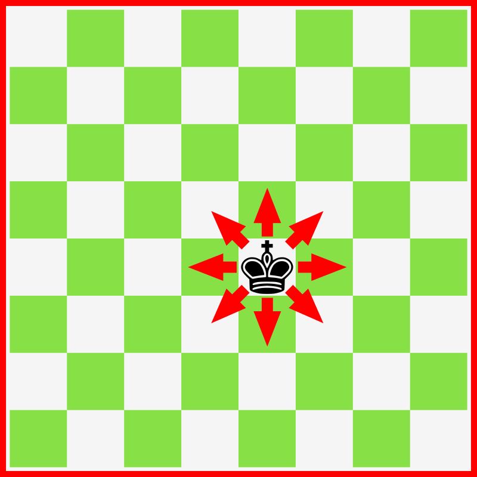
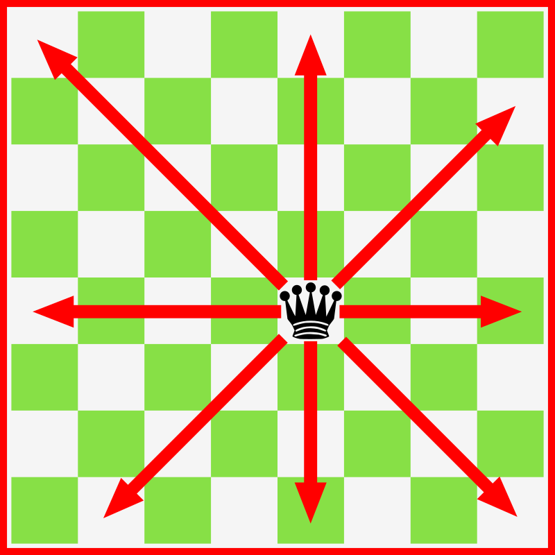
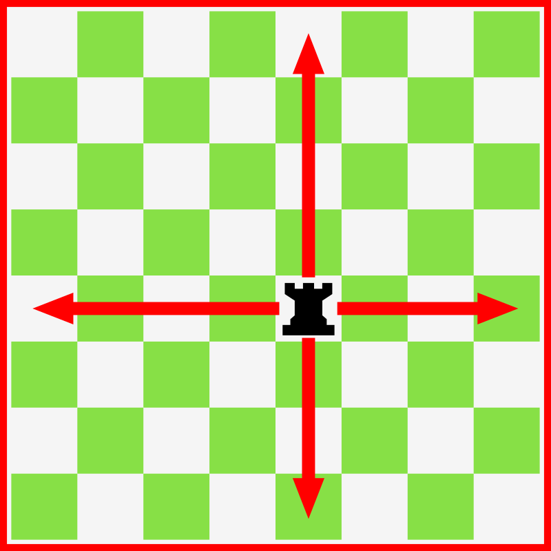
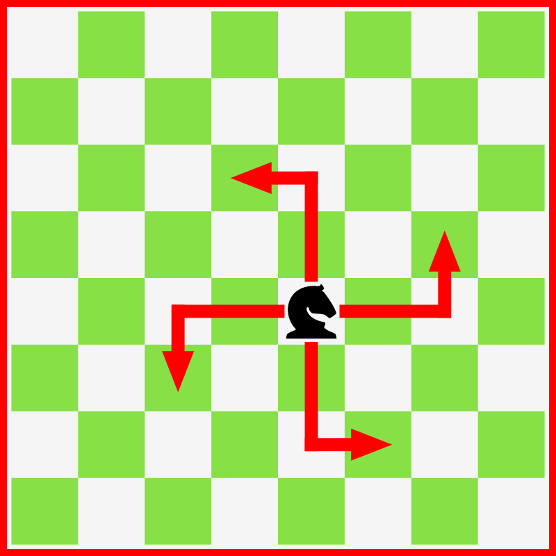
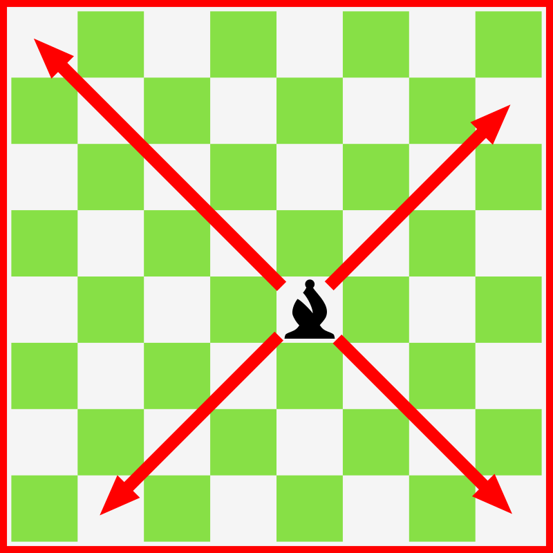
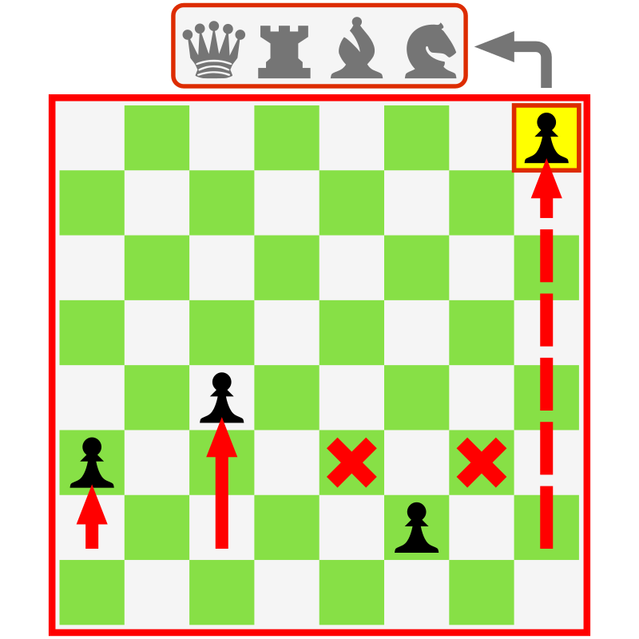

There are 6 different pieces in chess. They all look different, and have different strengths. These chess pieces have an assigned value that is "equal" to their strength.
| Piece | Points Worth | Description | Movement |
|---|---|---|---|
| King | Indefinite | The King is the most valuable piece in chess. The point of the game is to prevent your king from being put in Checkmate. There are two kings on the board, one for each player. The King can only move 1 square diagonally, vertically, or horizontally. Due to its limited space of movement, it can be paticularly hard defending your king on its own. Therefore, the king depends on your other pieces to defend it, and to put the other king in checkmate. |

Source: Rafael Javier. Chess King Movement / Movimiento Rey Ajedrez. 2017. openclipart.org (https://openclipart.org/detail/275663/chess-king-movement-movimiento-rey-ajedrez) |
| Queen | 9 | The Queen is the strongest piece on the board. Capturing your opponents queen can lead you to an easy win. The Queen is used in many stratergies and openings, and is a vital piece in your game. It move diagonally, horizontally, and vertically for an unlimited amount of squares. However, if an opposing piece were to stand in its way, the queen has to stop to capture the piece. If an allied piece were to stand in its way, the queen would have to stop beside the allied piece. |

Source: Rafael Javier. Chess Queen Movement / Movimiento Dama Ajedrez. 2017. openclipart.org (https://openclipart.org/detail/275662/chess-queen-movement-movimiento-dama-ajedrez) |
| Rook | 5 | The Rook is the second strongest piece on the board. There are 4 rooks on the board, located at each corner. The way they move is by moving horizontally or vertically for an unlimited amount of squares. Because of they position they start in, they are usually used in the endgame. |

Source: Rafael Javier. Chess Rook Movement / Movimiento Torre Ajedrez. 2017. openclipart.org (https://openclipart.org/detail/275661/chess-rook-movement-movimiento-torre-ajedrez) |
| Knight | 3 | The Knight is one of the most unique chess pieces on the board, because of its weird moving pattern. The Knight moves in an L shape, 2 squares in any direction, and 1 square perpendicular to the direction you chose. If there are any pieces in between, it does not affect the movement of this piece. This is why the knight is used and taken out of its position, very early in the opening. It is up to debate on whether or not the knight is better than the bishop, and personally I believe that the knight is better. The knight is known for being used in forks, because of its unique movement pattern. |

Source: Rafael Javier. Chess Knight Movement / Movimiento Caballo Ajedrez. 2017. openclipart.org (https://openclipart.org/detail/275659/chess-knight-movement-movimiento-caballo-ajedrez) |
| Bishop | 3 | The Bishop is one of the pieces used early on in the game. It can move diagonally for an unlimited amount of squares, but stops if there is something in the path. The Bishop is used in many opening like the Knight, and is a very good piece overall. There are 4 bishops on the board, 2 belonging to each opponent. One bishop can only move on black squares, and the other on white squares. |

Source: Rafael Javier. Chess Bishop Movement / Movimiento Alfil Ajedrez. 2017. openclipart.org (https://openclipart.org/detail/275660/chess-bishop-movement-movimiento-alfil-ajedrez) |
| Pawn | 1 | The Pawn is the most abundant piece, but the weakest. It can only move forward one square; two squares, if it hasnt moved yet; diagonally forward one square, if there are opposing pieces on those squares; and pawn promotion, when a pawn reaches the 8th row, it can turn into a knight, bishop, rook, or queen. There are 16 pawns on the board, 8 for each opponent. Thus, there are 2 pawns on each column. An opening usually starts by moving a pawn, but can be started by moving your knight. |

Source: Rafael Javier. Chess Pawn Movement / Movimiento Peon Ajedrez. 2017. openclipart.org (https://openclipart.org/detail/275664/chess-pawn-movement-movimiento-peon-ajedrez) |